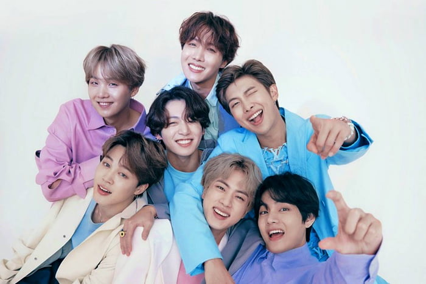

Orígenes del K-pop
Podemos pensar que el k-pop es algo muy moderno, sin embargo, lleva existiendo desde principios de la década de los 90, aunque su éxito internacional llegó mucho más tarde. Fue gracias a un talent show coreano que este estilo musical empezó a crecer. Puedes leer algún ensayo sobre kpop en Ejemplius para entender un poco más su origen pero, a fin de cuentas, el k-pop no es más que un estilo de música basada en boy bands constituidas por jóvenes y atractivos coreanos. El k-pop empezaba a hacerse popular en Corea a principios de los años 2000, pero eso no era nada con todo lo que estaba por llegar.
Psy, creó el hit musical más grande de todos los tiempos, el tema de Gangnam Style fue el más escuchado de Youtube durante al menos cinco años y fue el primero en superar los 1.000.000.000 de visitas en la plataforma. Este fue el boom del k-pop, ya que fue el tema que llevó este estilo musical a todas las partes del mundo.
La actualidad del k-pop
BTS, la banda de k-pop más importante y popular del momento. El movimiento que creó el k-pop llegó a hacer que los fans de las diferentes bandas compitan por hacer que sus ídolos se convirtieran en los artistas más vistos de la plataforma. BTS batió un récord en 2019 al subir el vídeo que más visitas consiguió en 24 horas. El tema que subieron fue Boy with Luv. Lo más curiosos de este récord es que el vídeo al que batió fue al tema de una girl group de k-pop que recientemente había conseguido ese récord con su canción Kill This Love.
Podría haber parecido una moda pasajera, y en algún momento desaparecer de golpe, pero no ha sido así. El k-pop cada vez está más extendido por el mundo y las grandes bandas como BTS siempre están en las listas de los más escuchados a nivel internacional. La relevancia del k-pop ha sido tan importante que incluso el idioma coreano se está haciendo cada vez más popular y, poco a poco, cada vez más gente decide estudiarlo en diferentes países del mundo. El k-pop ha pasado de ser un estilo más a un fenómeno internacional e incluso una forma de vida para muchos de sus fans.
BTS
BTS, también conocido como Bangtan Boys, es un grupo surcoreano formado en 2010 debutando bajo la empresa Big Hit Entertainment con el álbum sencillo 2 Cool 4 Skool en 2013. Está compuesto por siete integrantes: Jin, Suga, J-Hope, RM, Jimin, V y Jungkook. A pesar de haber sido creado con un estilo principalmente hip hop, ha llegado a incorporar una gran variedad de géneros en su repertorio musical.
Conocí a BTS en 2017, cuando un amigo me mostró el sencillo DNA, fue algo completamente diferente al tipo de música a la que estaba acostumbrada, es una canción que incorpora sonidos acústicos, con beats de Future Bass, en un ambiente EDM, una combinación diferente y nueva par mí. Por otro lado, el video musical también fue algo inesperado, utilizan imágenes del ADN real y constante color vibrante, como una explosión, BTS imita la estructura química de la molécula a través de la coreografía, presentandose mientras se escuchan vibrantes tonos mejorados por CGI.
Hoy en día BTS es un fenomeno mundial, con ayuda de army han logrado posicionarce en los primeros numeros de listas musicales internacionales, sin duda alguna BTS es el claro ejemplo de la frase "el que persevera, alcanza", han demostrado pasión y dedicación a cada uno de sus proyecto, tanto como grupo y como solista, tal ha sido su exito que han contribuido a promover e impulsar el turismo en su país, además han logrado conectar emocionalmente con su fando, a un nivel insuperable, donde army es considerando uno de los fandoms más fuertes a nivel mundial.
BTS LOVE MYSELF
BTS han participado en tres sesiones de la Asamblea General de las Naciones Unidas y crearon una campaña llamada Love Myself, en colaboración con UNICEF en 2017, para poner fin a la violencia y agresión que experimentan millones de niños, niñas y adolescentes en todo el mundo, a lo largo de su ciclo de vida y muchas ocasiones, en los entornos más cercanos a ellos: la familia, la escuela y la comunidad.
Como parte de esta colaboración Big Hit Entertainment, la compañía detrás de BTS, donó a través del Comité Coreano de UNICEF, 500 millones de won (alrededor de US $ 448,000) a la campaña #ENDviolence en noviembre de 2017 y el 3 por ciento de las ventas de álbumes físicos del álbum "Love Myself", así como los ingresos por venta de diversos productos.